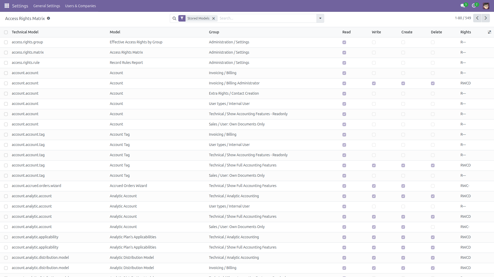
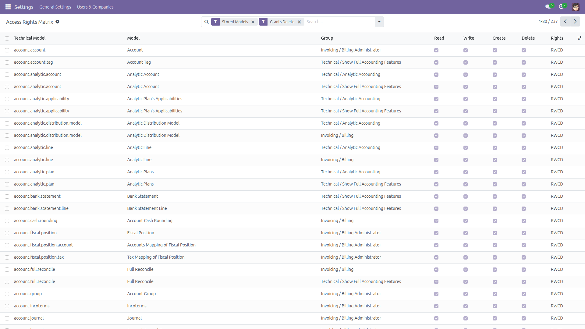
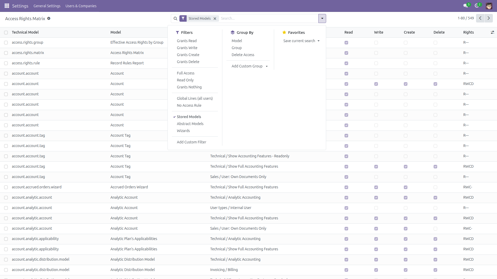
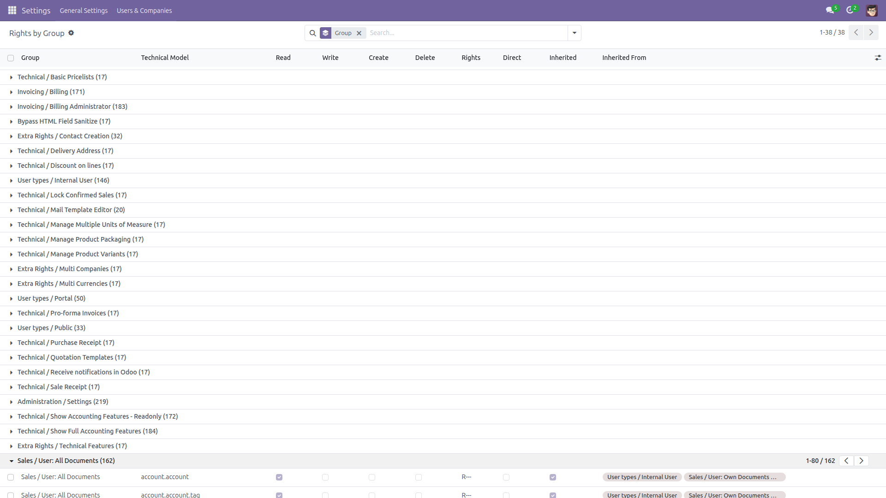
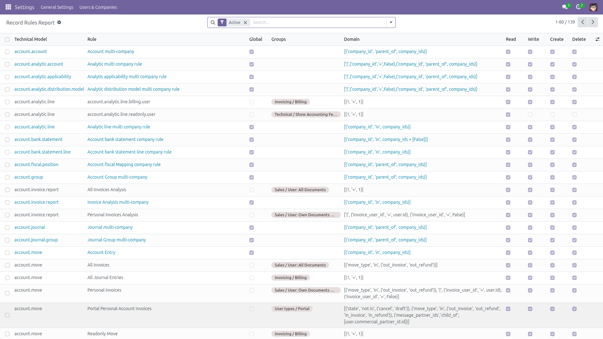

Access Rights Matrix
Which groups can delete invoices? One screen, one answer.
In standard Odoo that question means opening Settings → Technical → Access Rights and paging through the list one line at a time. This module turns those lines into a read-only matrix: one row per model and group, with a read, write, create and delete tick, plus filters by model, by group and by permission. It also resolves what a group really gets once inherited groups are taken into account, and lists the record rules with their domains.
Free and open source (LGPL-3), Odoo 14.0 through 19.0.
- One row per model and group — when several modules add an access line for the same pair, they are merged the way Odoo merges them: a permission is granted as soon as one active line grants it. The row says how many lines it merged.
- Filter by permission — “grants Delete”, “grants Create”, “Full Access”, “Read Only”, “Grants Nothing”. Combine with a model or a group to answer a precise question.
- Group by model or by group — then export either shape to spreadsheet for the auditor.
- Rights by Group — pick a group and see every model its members can reach, including the rights inherited from the groups it implies, resolved transitively, and the rights every user gets from access lines that carry no group at all. Each row says whether the right is direct, inherited or global, and names the group it comes from.
- Record Rules — every
ir.rule with its domain, the operations it applies to, whether it is global or attached to groups, and which groups.
- Global lines and gaps are flagged — an access line with no group is granted to everybody and is shown as a Global Line; a model with no active line at all is shown as No Access Rule, because nobody but the superuser can touch it.
- Read-only by design — three SQL views over
ir.model.access, res.groups and ir.rule. The module never writes to an access line or a record rule, never uses sudo, and the reports themselves refuse create, write and delete even for administrators.
- Administrators only — every screen is restricted to the Administration / Settings group.
Screenshots

The matrix: model, group and the four permission ticks, with a compact RWCD summary column.

The Grants Delete filter: every model and group combination that allows deletion. Add a model to the search bar to narrow it to one document type.

Ready-made filters by permission, by global line, by missing access line and by model kind — and Group By model or group for the export shape you need.

Rights by Group: the effective reach of a group, with Direct, Inherited and Inherited From columns showing exactly where each right comes from.

The record rules with their domains, their groups, and the operations they filter.
Installation
- Copy the module into your addons path, or install it from the Apps list.
- Open Apps, remove the “Apps” filter, search for Access Rights Matrix and click Install.
- Only the standard
base module is required — there is nothing else to install.
Configuration
- No configuration is needed: the three reports work as soon as the module is installed.
- Access is restricted to the Administration / Settings group. No other user can read the reports; there is no setting to widen that.
- Developer mode is not required — the menus live under Settings, next to Users & Companies.
Usage
- Go to Settings → Users & Companies → Access Rights Matrix.
- Access Rights Matrix — type a model in the search bar (for example
account.move) and apply the Grants Delete filter to see exactly which groups may delete it.
- Group by Model or by Group, then select all and use Export to hand the auditor either shape.
- Rights by Group — expand a group, or select groups in Users & Companies → Groups and use Action → Effective Access Rights, to see every model that group reaches and where each right comes from.
- Record Rules Report — filter by model or group to read the domains that decide which records those groups actually see.
What it does and does not cover
- Inherited groups: the matrix is deliberately literal — it reports the access lines exactly as recorded and does not expand implied groups. The Rights by Group report is the one that expands them: it walks
res.groups.implied_ids transitively (cycles included, without looping) and adds the access lines that carry no group, because Odoo grants those to every user.
- Active lines only: an unticked access line is ignored by Odoo, so it is ignored here too. Record rules are shown whether enabled or not, with disabled ones hidden behind the default Active filter.
- Models with no access line are listed with a No Access Rule flag rather than hidden: nobody but the superuser can reach them, which is exactly what an audit wants to see. Abstract models (mixins, report templates) store nothing and never need a line, so they are hidden by the default Stored Models filter.
- Not covered: field-level access (the
groups attribute on a field), menu and view visibility, and rights a user gains from a company or from sudo in custom code.
- Size: Rights by Group expands to one row per group per reachable model. On a large database with many apps installed that is in the order of a hundred thousand rows, and a database view carries no index, so the first load and a full export take a few seconds. The matrix itself stays small — a few thousand rows.
- Nothing is modified. The module reads; it never creates, edits, disables or deletes an access line or a record rule.
Version notes
Identical behaviour on every supported series (14.0 – 19.0). The reports are database views computed on read, so they are always in step with the access lines and record rules currently installed — there is no cache to refresh and no scheduled job to run.
License: LGPL-3 · Source on GitHub · Issues and contributions welcome.